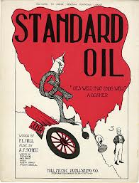
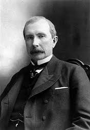
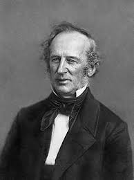
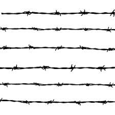
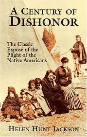
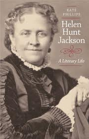
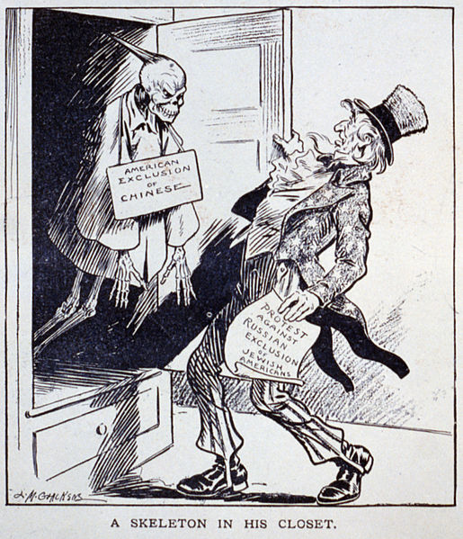
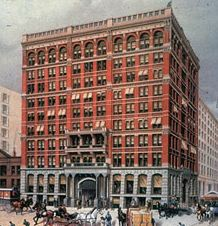
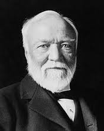
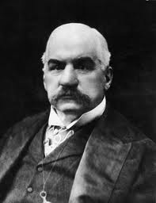

| Key |
| Urbanization |
Blue |
| Immigration |
Black |
| Industrialization |
Purple |
| Westernization |
Green |
- 1862
- -Pacific Railway Act: It allowed the construction of a railroad connecting the East and West. This promoted Westernization, since people could now move West and create farms
This also speeded up commerce between the two regions, and it helped the steel and coal business grow.
- -The Homestead Act gave 160 acres of free land to any person who would farm on the Great Plains for five years. This act promoted westernization along with the railroads,
which made traveling West much quicker and easier.
- 1863
- -John D. Rockefeller founded the Standard Oil Company, which would control ninety percent of the oil industry by 1881.

- 1866
- -The National Labor Union was founded. It included all workers (both skilled and unskilled), and this organization won the eight hour work day for the workers.
- 1867
- -Cornelius Vanderbilt created the New York Central Railroad trust, which ran from New York city to Chicago.

- 1868
- -The National Grange of Patrons of Husbandry was created by Oliver H. Kelley. At first it was an educational organization, but in the 1870's, it took action against
railroads annd other trusts. In the mid west, many laws were passed which regulated railroad rates. They were called the Granger laws.
- 1869
- -The Knights of Labor was formed, and it was led by Terence V. Powderly. It also gave all worker memberships, and it was against trusts.
- 1873
- -Anthony Comstock got Congress to pass the Comstock Law, which prohibted the mailing of "inappropriate material."
- 1874
- -The Woman's Christian Temperance Union was formed and advocated prohibition of alcohol.
- -The invention of barbed wire by Joseph Glidden helped western farmers protect their land.

- 1877
- -In Munn v. Illinois, it was declared that states had the right to control public businesses.
- 1881
- -Helen Hunt Jackson published A Century of Dishonor. This book described the mistreatment of Native Americans in the mid west.

- 1882
- -The Chinese Exclusion Act banned immigrants from China from entering the U.S.

- -Immigration Act of 1882- This law imposed a $0.50 tax on all immigrants into the United States. The law also prevented "convicts, lunatics, and idiots" from immigrating into the country.
- 1885
- -George Westinghouse created the transformer that can produce a high voltage current. Because of his invention, it was possible to light cities and operated other
electric appliances.
- -William Le Baron Jenny built the first sky scraper, which was the Home Insurance Company Building in Chicago (10 stories tall).

- -Rock Springs Massacre- Tension between Asian and white immigrants began when more Asians were being hired as miners than other races because they were paid less. As a result, 28 Chinese men were killed with over 70 houses burned.
- 1886
- -Some anarchists set off a bomb in Haymarket Square in Chicago which killed seven police officers. Members of the Knights of Labor had a meeting at the same place,
and consequentially,the bombing was blamed on them. Teh labor group then lost membership.
- -The American Fedration of Labor contained only skilled workers. this group was led by Samuel Gompers and he sought after higher wages and better working conditions.
- -In Wabash v. Illinois though, the Supreme Court ruled that states could not regulate interstate commerce. As a consequence, many of the
Granger laws were nullified.
- -Pittsburgh Riot- Relations between Irish-Americans and Italian- Americans had worsened in Pittsburgh, and two Italian men were killed by a gang of Irish-Americans
- 1887
- The Dawes Act of 1887 was to break up Native American tribes, but many natives refused to follow this act. Americans believed that this act would make natives "civilized".
- 1898
- -The first professional basketball league was formed.
- 1899
- -Jane Adams opened the Hull House in Chicago, which helped many immigrants. There, they learned English, the industrial arts, established music schools, etc.
- 1890
- -The Sherman Antitrust Act was passed to seperate trusts. Unfortunately, it was not effective because of the wording of the act. It only refered to trusts that
were affecting commerce.
- -The National American Woman Suffrage Association was founded by Elizabeth Cady Stanton and Susan B. Anthony. This group advocated woman suffrage.

- -The National Alliance, an organization of farmers, met at Ocala, Florida. This group wanted the direct election of senators, and income tax and other
reforms. They did not get to form their political party, but the reforms they wanted were adopted by the populist party two years later.
- 1892
- -The Populist Party was formed. They wanted direct election of senators, unlimited coinage of silver, an income tax, and other reforms.
- 1893
- -The Antisaloon League was another prohibition group. Carry A. Nation was know for smashing barrels of beer with her hatchet.
- -The panic of 1893 occured because of overbuilding of railroads, causing the stock market to crash along with many businesses.
- -Frederick Jackson Turner's frontier thesis stated that America's frontiers has promoted independence throughout its history.
- 1895
- -In the Supreme Court Case United States v. E.C. Knight, it was declared that the Sherman Antitrust Act could onlu be applied to commerce.
- 1900
- -Andrew Carnegie sold his steel industry (Carnegie Steel) to J.P. Morgan, who renamed the industry as U.S. Steel.

- 1907
- -Gentlemen�s Agreement -The Gentlemen�s Agreement of 1907 was an informal agreement between the United States and Japan that Japan would stop giving passports to emigrants to the United States, while The United States would stop the federal discrimination of Japanese students in San Francisco.
- 1921
- -Emergency Quota Act- This law lowered immigration into the United States by limiting the number of immigrants to 3% of the people living in the US from that country in 1910.